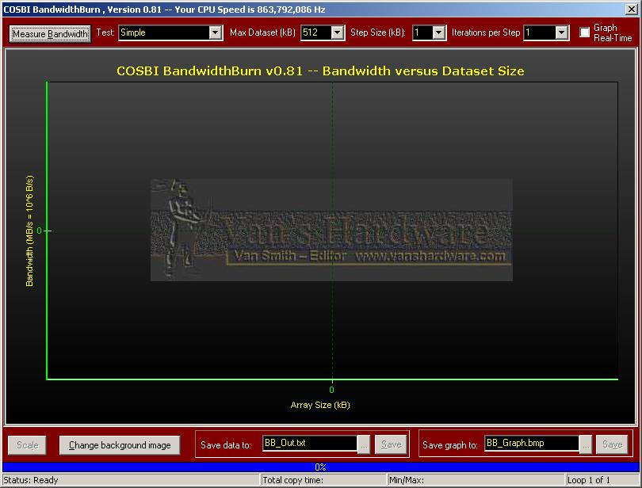

Introduction
BandwidthBurn is an Open Source utility developed in the Borland Delphi 7 RAD (Rapid Application Development) programming environment. BandwidthBurn facilitates examination of the bandwidth performance of personal computers’ cache and memory subsystems. A variety of tests representative of various bandwidth intensive methods are selectable via drop-down combo boxes. The memory range to be tested can be similarly specified as well. To eliminate noise from operating system background tasks, the number of iterations per step can be chosen and the average bandwidth at each step will be reported.
Data can be saved to a text file for easy importation into spreadsheets. For expediency, BandwidthBurn’s graph can be saved directly to a bitmap file. The graph’s background image can be changed to customize its appearance for publication.
Commandline arguments
Version 0.81 of BandwidthBurn adds the facility for commandline driven execution. Combined with a new test that verifies the values written to memory, BandwidthBurn can be used as part of an automated stress test.
The following commandline switches are currently recognized:
|
Switch |
Meaning |
|
v |
Run Verify test. Will graph real-time, set iterations per step to 500, and MaxDatasetSize to 1024. |
|
s |
Run Simple test |
|
bp32 |
Run Block Prefetch32 test |
|
bp64 |
Run BlockPrefetch64 test |
|
oos |
Run Object-Oriented Simple test |
|
oobp32 |
Run Object-Oriented Block Prefetch32 test |
|
oobp64 |
Run Object-Oriented Block Prefetch64 test |
|
oobp128 |
Run Object-Oriented Block Prefetch128 test |
|
stl |
Run Object-Oriented Simple Tight Loop test |
|
sf |
Save after last loop to default filename |
|
g |
graph real-time |
|
gn |
don''t graph real-time |
|
m nnnn |
Max dataset of nnnn kB |
|
i nnnn |
nnnn iterations per step |
|
ss nn |
nn kb step size |
|
l n |
loop n times |
|
fn “filename" |
Save results after last loop to filename |
Note: when specifying multiple tests, only the last test will be executed. If l is greater than one, only the results for the last loop will be saved.
Example 1
BandwidthBurn081 v sf g m 1024 i
1000 ss 1 fn “c:\results\bb results”
This
commandline will execute the Verify test (specified by v) and
save the results to the file “bb results.txt” in the
directory “c:\results\” (specified by fn
“c:\results\bb results”). Progress will be
graphed in real-time (specified by g). Datasets will be
tested in sizes from 1kB to 1024 kB (specified by m 1024) with
1 kB increments (specified by ss 1). Each dataset will
be tested 1000 times (specified by i 1000).
Test Details
BandwidthBurn has a variety of different bandwidth tests in order to examine the impact of different bandwidth intensive methods across computational platforms. Additionally, version 0.81 of BandwidthBurn adds a verify mode for stress testing.
All operations are performed on a 32-bit unsigned integer (cardinal) array. The specific tests are described below:
|
Test |
Description |
|
Simple |
This is a basic read/write test. The write test simply initializes the array to a randomly produced value. The write test accumulates the values of the array. Both loops are unwound 128 times. |
|
Block Prefetch32 |
Identical to the Simple test, but relocates 16 assignment statements spaced at 32-byte intervals (every eighth 32-bit integer element) to the beginning of each 128 unwound assignment block. This technique can be helpful when used with certain processors possessing 32-byte cache-lines. |
|
Block Prefetch64 |
Identical to Block Prefetch32 except that only eight statements at 64-byte intervals are relocated. Processors with 64-byte cache-lines should benefit from this. |
|
Multiply |
Identical to Simple test, but each assignment statement contains a single 32-bit integer multiplication. |
|
Read |
The read portion of the Simple test. |
|
Write |
The write portion of the Simple test. |
|
Toggle |
Toggles between Simple and Multiply at each step. |
|
Toggle 5x |
Identical to the Toggle test, but toggles only every fifth step. |
|
oo Simple |
Identical to the Simple test except that code is structured in an object-oriented class. Performance can be significantly different than the Simple test depending on microprocessor architecture. |
|
oo Block Prefetch32 |
Object-oriented version of BlockPrefetch32. |
|
oo Block Prefetch64 |
Object-oriented version of BlockPrefetch64. |
|
oo Block Prefetch128 |
Object-oriented block prefetch routine for 128-byte cache-lines. |
|
oo Read |
Object-oriented version of the Read test. |
|
oo Write |
Object-oriented version of the Write test. |
|
oo Tight Loop Simple |
Object-oriented version of the Simple test except that the assignment loops are not unwound at all. |
Be aware that the object-oriented tests can produce considerably different results than their non-OOPed counterparts depending on microprocessor architecture. BandwidthBurn can be used to investigate what assignment methods are ideal for the target platform.
The BandwidthBurn Interface

Illustration
1BandwidthBurn version 0.81 interface
Starting from the top of the program window, the Titlebar displays the application name and version as well as the clockspeed of the system being tested.
If the reported clockspeed is seemingly in error then it is likely that the target system is using dynamic frequency transition technology like VIA's PowerSaver, AMD's PowerNow! or Intel's SpeedStep. BandwidthBurn uses an extremely precise timing routine that counts each CPU cycle and calculates elapsed time under the assumption that a fixed number of CPU cycles elapse each second. The user must ensure that the system is operating at a fixed frequency; otherwise, BandwidthBurn results will be severely skewed by clock transitions.
The first control in the upper-left of the program window is labeled Measure Bandwidth. Pushing the Measure Bandwidth button will initiate the selected test under the selected conditions specified in the controls immediately to the right of this button.
Note: all controls having captions with an underscored letter can be activate through an associated keyboard shortcut. For example, the Measure Bandwidth button can be depressed with an <Alt>+<B> keystroke combination.
The Test combobox facilitates selection of the specific test to run. Descriptions of all of the tests were given in the section Test Details.
Max Dataset (kB) sets the limit of the largest block of memory to test. To accurately determine bandwidth of main memory, the Max Dataset size may have to be at least two or even three times the size of the CPU's L2 cache. The proper Max Dataset size can be determined by examining the BandwidthBurn curve. If the bandwidth curve is in main memory and is completely level (has a slope of zero) at the extreme right of the graph, then increasing Max Dataset further will not be needed.
By default, BandwidthBurn will measure bandwidth over datasets that start at one-kilobyte and increase in size by one-kilobyte until the size specified in Max Dataset is reached. The increment can be set as high as ten-kilobytes in the Step Size (kb) combo box. Increasing Step Size will speed up the test but will reduce the granularity (precision) of the curve.
A good idea of the bandwidth performance of a computer can be obtained from the default settings which iterate only once over each dataset size. However, BandwidthBurn is very sensitive to background processes and low iterations will show “noise” that is often undesirable for published results. Specifying “500” in Iterations per Step will greatly smooth the bandwidth curve by reporting the average of bandwidth value obtained at each dataset size.
Note: if the bandwidth curve remains noisy at 500 iterations per step then this indicates that a background process is running that is making your system unsuitable for formal benchmarks. Close down all running applications and retry. If necessary, open Task Manager and end all tasks and superfluous precesses. BandwidthBurn is an excellent tool to quickly determine if a system is properly prepared for benchmarking.
If desired, BandwidthBurn can graph the bandwidth curve in real time by checking Graph Real-Time. Due to the additional system overhead impacting bandwidth measurements, real-time graphing is most useful at high Interations per Step.
Once the bandwidth curve has been plotted, clicking Scale will toggle between zero-to-maximum scaling and minimum-to-maximum scaling.
To help editors quickly publish results from BandwidthBurn, the background image can be changed by pushing Change background image. Activating this button will open a dialog where the user can browse for the appropriate bitmap or jpeg background image to replace the default Van's Hardware logo.
Raw data can be saved to a text file under Save data to. Clicking Save will save the data to the specified file, while depressing the ellipsis will open a “Save As” dialog.
Save graph to works similarly to Save data to except the graph alone will be saved as a bitmap file.
When graphing real-time, the progress bar will show the percentage of the test that has completed.
Directly below the progress bar, the status bar shows the current program status, total time spent during the critical bandwidth tests, minimum and maximum bandwidth rates encountered and the current loop being executed (see section on commandline arguments above).